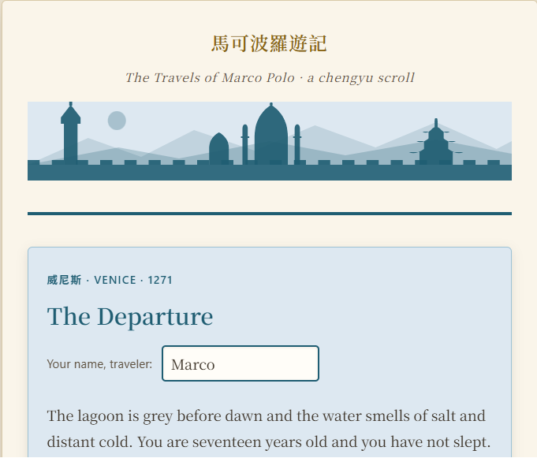
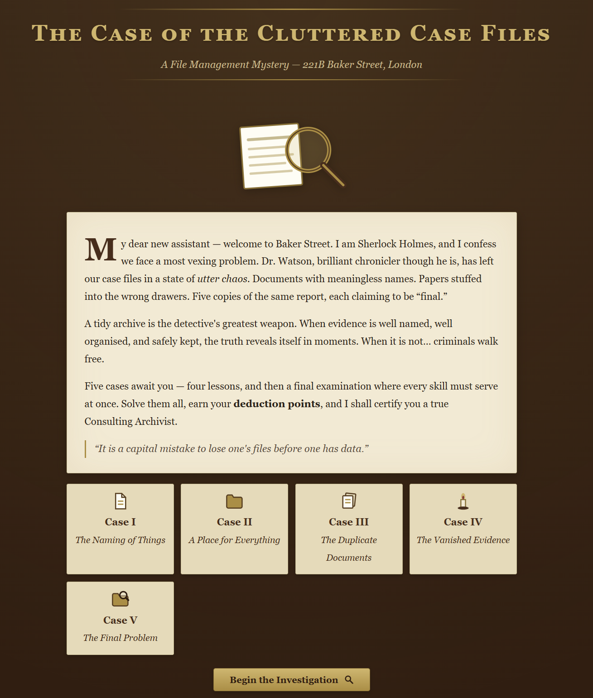
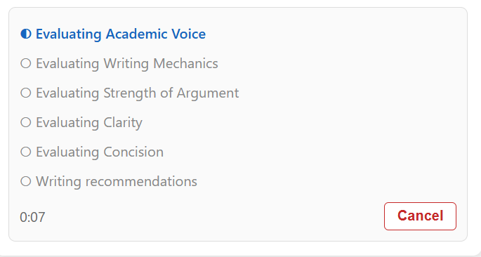

Projects
Placeholder intro — a sentence about what kind of software you build and why.
Selected work
-

Zhongwen Reader
A system-wide Chinese and Japanese popup dictionary for Windows, inspired by the Zhongwen browser extension — but for anything on your screen: Word documents, PDFs in Acrobat (including scanned pages), or any other window. Fully offline.
-

The Travels of Marco Polo — A Chengyu Scroll
A single-file browser game that teaches classical Chinese idioms (成語, chéngyǔ) through Marco Polo's journey from Venice to Kublai Khan's court. Initially designed for students in Introduction to Asian Civilization.
-

The Case of the Cluttered Case Files
A Sherlock Holmes–themed browser game that teaches students the concepts and practices of good file management.
-

Offline AI-Writing Aid
A local desktop app that evaluates your academic writing using AI. All processing happens on your machine — no internet connection required, no data leaves your computer.